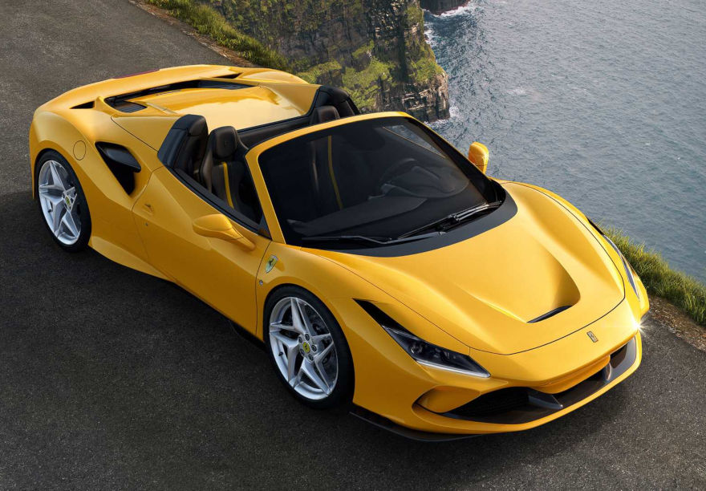
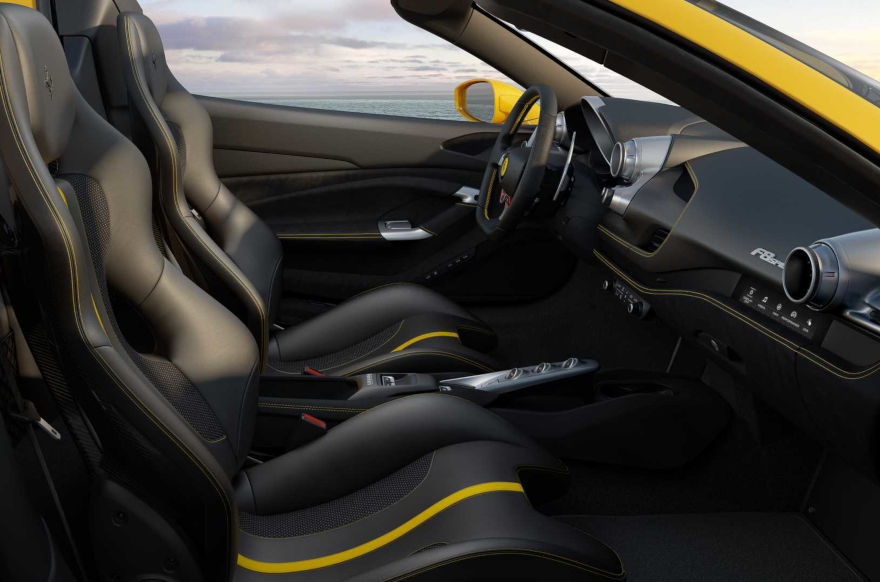

Ferrari F8 Spider
.png)

Введіть ваше запитання. Наш оператор надішле вам відповідь на e-mail або в Viber, Telegram
Ваш e-mail або номер телефону
Новий Ferrari F8 Spider отримав складний за 14 секунд жорсткий дах RHT( Retractable Hard Top), яка складається з двох секцій, посилене днище, що забезпечує більшу жорсткість кузова, оновлену кришку відсіку двигуна з парою опуклостей і змінене потужне антикрило. Завдяки доопрацюванню кузова і зменшенню ваги автомобіля на 20 кілограмів інженерам італійського виробника вдалося знизити аеродинамічний опір на 10%. Суперкар ідеально поєднує в собі елегантний дизайн і по-справжньому гоночний характер, класичну італійську розкіш і самі передові інженерні рішення.

Найважливішим компонентом моделі є бензиновий двигун V8 з двома турбонагнітачами. Його обсяг становить 3,9 літра, потужність – 720 кінських сил. Саме цей силовий агрегат став кращим в номінації "Двигун року" в 2016, 2017 і 2018 роках, а також був визнаний кращим мотором за останні 20 років. У поєднанні з потужним двигуном працює 7-ступінчастий "робот" F1, завдяки якому F8 Spider долає першу "сотню" всього через 2,9 секунди після старту. Максимальна швидкість суперкара складає 340 км/ч. В цілях поліпшення динаміки і досягнення стабільної керованості родстер оснащується асистентом ковзання Side Slip Control, а також системою Dynamic Enhancer, яка відповідає за моніторинг тиску в гальмівному механізмі і дозволяє більш точно дозувати уповільнення перед атакою віражів.
Салон Ferrari F8 Spider практично повністю ідентичний купе F8 Tributo. Відмінними рисами інтер'єру суперкара є оздоблювальні матеріали найвищої якості, ефектний спортивний дизайн і чудова ергономіка. Кожна деталь продумана до дрібниць і спрямована на те, щоб створити максимальний рівень комфорту для водія і пасажира.
